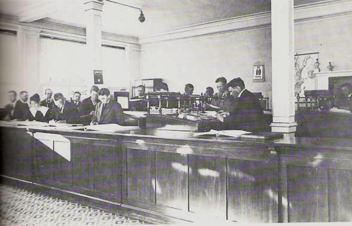
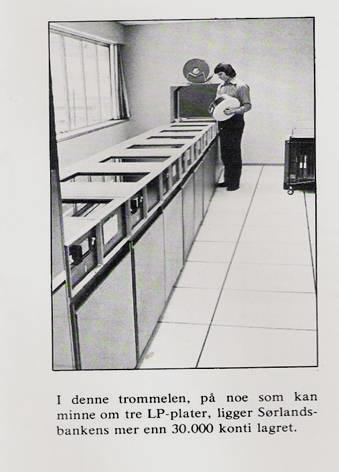
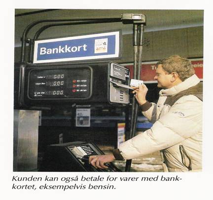
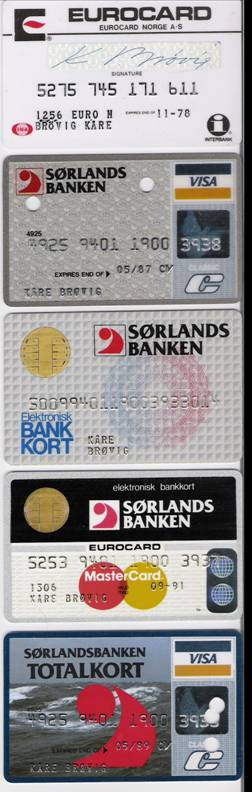

Bankhistorie på Sørlandet
- fra fjærpenn til internett i bank
Kåre Brøvig, pensjonert banksjef og ansatt i Kreditbanken for Sørlandet/Sørlandsbanken 1950-1989.
Ordet bank har sin opprinnelse flere hundre år tilbake i tiden. Da de italienske vekselerer vekslet penger for den tids kjøpmenn, foregikk det over et bord som på italiensk het banco.
Bankvesenets historie er både lang og kort. Det var noe som liknet for flere tusen år siden. I mer moderne tid kan en registrere at Banco di Napoli ble opprettet i 1539 og eksisterer fremdeles, og regnes som en av de første moderne forretningsbanker.
I 1816 ble Norges Bank opprettet. Christiania Sparebank er fra 1822 og Christianssands Sparebank fra 1824.
CHRISTIANIA KREDITKASSE FRA 1848
FRIGJØRE NORGE FRA UTENLANDSKE LEVERANDØRERS KREDITT
Vi hadde tidligere pengeutlånere som opererte helt privat, ofte med høye rentesatser og ubarmhjertige inndrivelsesmetoder.
Vår første forretningsbank er Christiania Kreditkasse fra 1848. Bankens første sjef kjøpmann Fritz Henrich Frølich var formann i styret i Handelens Venner i Oslo. Målsettingen var å frigjøre Norge fra utenlandske leverandørers kreditt og fra import av utenlandske industriartikler.
Dette siste kan vi forstå blant annet ved at Frølich i sin gård Kirkegt.34, hadde noe sånt som 34 forskjellige industrier. Selv satte han i banken og spikket fyrstikker, dyppet dem i sats og solgte dem. Det var Norges første fyrstikker. En stue var bankens kontor, og et bryggerhus var lagerrom for oppbevaring av deponerte varer.
Kjøpmannsstanden skulle få adgang til å reise likvider mot sikkerhet i sine varelagre. Banken skulle på basis av den sikkerhet som dens egenkapital og de deponerte varene representerte, utstede sine egne veksler til kundene, som så skulle diskontere disse i Norges Bank. Banken tok siden opp innskuddsvirksomheten for å få midler til å finansiere kundene uten å være avhengig av Norges Bank og de offentlige låneinnretninger.
I 1862 ble navnet endret til Christiania Bank og Kreditkasse.
Inn og utlån har siden vært kjernen i forretningsbankenes virksomhet.
Bankene vokste etter hvert i individuell kapasitet og i antall. Det største antall forretningsbanker vi har hatt i landet, hadde vi i 1919, med 198 stykker. Nedgangen i antall banker siden 1920 skyldes foruten krisen i 1920-årene, dels den nye bankloven som skjerpet kravene til egenkapital.
I siste halvdel av 1900-tallet er det blitt en konsentrasjon til større forretningsbanker og sparebanker med et utvidet filialnett. Dessuten er det kommet inn utenlandske banker og utenlandsk eierskap.
TO FORRETNINGSBANKER STARTET OPP I KRISTIANSAND I 1926
KREDITBANKEN FOR SØRLANDET A/S
ble opprettet 5/12 1925. Den kom i gang 1. februar 1926
Det er interessant å merke seg formålet i vedtektene:
Bankens formål er å utføre alle forretninger og tjenester som det er vanlig og/eller naturlig at banker utfører.
Videre skal dens formål være å opphjelpe byens og distriktets næringsveier og søke å fremme et godt samarbeid mellom land og by.
Det er også bakens oppgave å tjene som formidlingsinstitutt for distriktets sparebanker.
Banken skulle være en bank for bygd og by. Av styrets valgte medlemmer skulle et av styrets medlemmer være fra Aust-Agder og et fra Vest-Agder. Når det gjelder representantskapet, skulle det bestå av 18 medlemmer valgt av aksjonærene, derav 9 fra byen og 9 fra landdistriktene. Av de 6 innskytervalgte representanter skulle 2 være fra Aust-Agder, 2 fra Vest-Agder og 2 fra Kristiansand.
Aksjeinnbydelse for Kreditbanken for Sørlandet A/S.
Den 1. februar 1926 kom banken i gang i Markensgate 16, på hjørnet mot Rådhusgaten med Jens Langfeldt som adm. direktør. Fra samme tid kunne forgjengeren Sørlandets Kreditbank gå i avvikling.
Forgjengeren Sørlandets Kreditbank avvikles
Fra samme tid kunne forgjengeren Sørlandets Kreditbank gå i avvikling. Det var i november 1915 det ble innbudt til stiftelse. Banken trådte i funksjon i 1916, i en tid da krigskonjunkturene hadde satt fart i spekulasjonsvirksomheten i så mange bransjer. Den kom under offentlig administrasjon 30. april 1923. Den ble ferdig avviklet i 1930 med en totaldividende på 90,1 %. Den kunne muligens ha vært reddet, men tilliten var dessverre borte.
”Det er en forutsetning at den nye bank overtar de gode løpende forretninger som Sørlandets Kreditbank har opparbeidet og som betyr et betydelig aktivum som innskytere og kreditorer i den gamle bank får del i ved at tegne aksjer i den nye bank.” Slik heter det i aksjeinnbydelsen for tegning av aksjer i Kreditbanken for Sørlandet.
Interiør fra Sørlandets Kreditbank og Kreditbanken for Sørlandet.
Kreditbanken for Sørlandet A/S endret i 1965 navn til SØRLANDSBANKEN A/S.
Kristiansands og Oplands Privatbank A/S
Den åpnet 8. september 1926 i den samme bygningen og med den samme banksjef, M. Bøhler, som siden 1922 hadde ledet Søndenfjeldske Privatbank og Handelsbankens filial. Forløperen var distriktets første privatbank, Søndenfjeldske Privatbank, som åpnet sine dører 17. mars 1890. Det var Kristiansands Handelsstands Forening som tok initiativet til starten av Kristiansands og Opplands Privatbank. Det var også tilfelle da Søndenfjeldske Privatbank åpnet sin virksomhet.
Kristiansands og Oplands Privatbank arbeidet til å begynne med mest for byens forretningsstand, men etter hvert kom også landdistriktene inn i bildet. I representantskapet skulle det være 11 fra byen og 5 fra landet.


SØRLANDSBANKEN A/S
DEN 1. JANUAR 1984 BLE PRIVATBANKEN OG SØRLANDSBANKEN I KRISTIANSAND FUSJONERT OG BLE TIL AGDERBANKEN A/S.
Allerede i 1985 endret AGDERBANKEN A/S navnet til SØRLANDSBANKEN A/S.
Forsøkene med å få til en selvstendig foretningsbank med hovedsete i Kristiansand har tradisjoner tilbake til 20-årene, 1964 og 1979/80. Hovedtrekkene i stortingsmeldinger fra 1960 årene var ønsket om å bygge opp sterke distriktsbanker ved siden av de landsdekkende bankene.
Landsdelskomiteen for Agder og Rogaland - fra 1973 - ville også styrke bankstrukturen i landsdelen. De to forretningsbankene i Kristiansand burde bli en bank. Det ble de omsider, og konsesjon ble gitt 28/7 1983 og starten ble 1.januar 1984.
Næringslivet i landsdelen var inne i en omstillingsprosess i 1984.Arbeidsledigheten vokste. Den store utfordringen var å skaffe flere tusen nye arbeidsplasser. Flere aktører var engasjert: Aust-Agder næringsselskap og Vest-Agder næringsutvalg og et tiltakskontor for de indre bygder.
Kristiansand hadde etablert sitt eget næringsråd og STI hadde et prosjekt på gang for å lage en OIS modell for mindre bedrifter. Agderbanken støttet begge disse tiltakene. Også Agderforskning ble støttet av Agderbanken. Agderbanken ville være med på å skaffe optimisme.
Næringslivet skulle tilbys både finansielle tjenester og konsulenttjenester. For personlige kunder ble økonomisk rådgiving styrket.
Hovedkontoret var i Markensgaten 16 i Kristiansand. Filialer i Kristiansand: Vågsbygd, Grim, Øvre Markens, Rutebilstasjonen, Lund, Kongsgård, Hamresanden, Kjevik.

De nye aksjebrevene hadde ikke utbyttekuponger. Utbyttet ble overført til konto eller sendt med bankgiro.
Sørlandsbanken bygde ut flere avdelingskontorer i landsdelen. I 1989 hadde Sørlandsbanken avdelingskontorer i Arendal, Grimstad, Lillesand, Birkenes, Evje, Vennesla, Songdalen, Søgne, Mandal, Farsund og Kvinesdal.
Forvaltningskapitalen var 1.1. 1989: 5.806 mill. kroner. Antall årsverk: ca. 345. Ca. 120.000 innskudds og lånekonti, og ca. 65.000 kunder. Den hadde kunder i samtlige kommuner på Agder.

Kreditkassen Distriktsbank Sørlandet
Landets eldste forretningsbank Christiania Bank og Kreditkasse fusjonerer med Sørlandsbanken i 1990.
Den 19. november 1990 gikk Sørlandsbanken og Kreditkassen sammen og ble Kreditkassen Distriktsbank Sørlandet. På fusjonstidspunktet hadde Kreditkassen et omfattende distribusjonsnett i Norge. Til sammen kunne kundene nyte godt av hele 180 salgssteder. K-Nettbank var en av de største i Norge.
Kreditkassen var også en ledende internasjonal shippingbank. Konsernet hadde ca. 154 milliarder i forvaltningskapital og hadde ca. 5000 årsverk. Ca. 480.000 personkunder, og ca. 50.000 bedriftskunder. Kreditkassen var en fremtredende valutabank med utenlandsvirksomhet i flere verdensdeler.
Kreditkassen Distriktsbank Sørlandet opererte i 1990 med ca. 7 milliarder i forvaltningskapital, ca. 80.000 kunder, ca. 410 årsverk, fordelt på ca. 520 ansatte. Den nye banken kunne møte kundene på 23 steder i 12 kommuner i Agder-fylkene, fra Kvinesdal til Arendal.
I forbindelse med fusjonen ble det fokusert på at Sørlandet er framtidens landsdel - og 90-årene er mulighetenes tiår for sørlendingene. Optimistiske ord i en tid med mye ledighet - og med store deler av næringslivet nede i en bølgedal
Teknologi, kommunikasjon, internasjonalt samarbeid og finans er sentrale sikkord når det gjelder 90-årenes utvikling på Sørlandet het det.
Kraftig utlånsvekst i forretningsbankene fikk følger.
Som en følge av kraftig utlånsvekst på slutten av 1980-tallet fikk de store norske forretningsbankene store tap og kom i alvorlig krise. I 1991 var Christiania Bank og Kreditkasses egenkapital brukt opp, og den norske staten gikk inn med ny kapital. Med dette ble staten bankens eier. Statens eierandel ble i 1995 redusert til ca. 51 % etter salg av aksjer til publikum. Og i 1999 redusert til ca. 35 %.
I 1999 la MeritaNordbanken inn bud på samtlige aksjer. Etter at staten gikk med på å selge sin aksjepost i banken, ga norske myndigheter konsesjon for kjøpet.
Nordea
Den 28. desember 2000 ble Christiania Bank og Kreditkasse ASA innlemmet i Nordea.
Nordea er et nordisk finanskonsern etablert etter sammenslutning og oppkjøp av flere banker og forsikringsselskaper. Nordea er det ledende finanskonsernet i Norden og Østersjøområdet.
I 2007 har Nordea nesten 10 millioner kunder, over 1.100 salgskontorer og en ledende posisjon innen banktjenester på Internett med 4,6 millioner nettbankkunder.
Fra fjærpenn og blekk til?
et var en pionertid da de første bankene begynte. Enkle forhold – ikke telefon, telegraf, jernbane, bil og ingen regnemaskiner. Fjærpenn og blekk var viktige redskaper.
Alt måtte føres med hånd, fjærpenn ble på 1800-tallet avløst av penneskaft med pennesplitt av metall, men blekk var nødvendig. Hodet var ”regnemaskin”.
Blekkhus på alle arbeidsplasser var en selvfølge. Vanlig blekk eller et kopierende blekk, ditto blekk. Det som var skrevet med ditto blekk, kunne dupliseres i en kopipresse. En kunne lage en kopi av en konto eller et brev.
Ditto blekket hadde en tendens til å smitte over på fingrene og videre på andre ting som hvite håndtak på kniver etc.
Det tok lang tid før fyllepenn ble aktuell. De første ble produsert i USA i 1884.
Kontrabok (innskuddsbok, bankbok) for innskudd og uttak
Var det stille, kunne en høre lyden av pennen når beløpet ble skrevet 4-5 ganger.
Skranke og kasse
Når en kunde skulle sette inn eller ta ut penger i banken, ble beløpet ført inn i kontraboken med blekk og penn. Den nye saldoen ble regnet ut med hoderegning.
Navn, kontonummer og beløp ble ført i kassedagboken. Det kunne være en hovedrubrikk og rubrikker for de forskjellige innskudds eller kredittformer. Beløpet måtte samtidig, eller senere konteres på kundens kontoblad i store kontobøker. Og saldo regnes ut og føres.
Kassereren fikk kontraboken og førte inn eller ut beløpet i sin kassekladd. Han tok imot eller leverte ut penger. Etter dagens slutt måtte kassekladden og kassedagboken summeres for avstemming og kontroll av kassebeholdning.

Kassedagbok

Kassekladd
Protokoll med kontoblad
Etterarbeid
Det var mye etterarbeid. Spare og lånekonti skulle renteregnes etter forskjellige metoder. Tall skulle samles til hovedbok. Det var periodiske avstemminger av konti.
Før nyttår var det mange dagers arbeid med renteregning, kontering, saldering og avstemming.
Nye lån, fornyelser, veksler, inkasso, sjekker osv. ble gjerne ført på notaer og slipper i en eller annen form.

Memorial. Beløp som ikke angikk kasserer ble ført i memorial og kontert derfra.
Hovedbok. Alle hovedbeløp ble til slutt samlet i hovedboken.
Forretningsbankenes hovedoppgave var i første omgang å finansiere næringslivet
Det er en oppgave av vital betydning. Næringslivets trivsel og fremgang er grunnlaget også for den offentlige økonomi og de offentlige finanser. Personkundemarkedet har i de senere år blitt meget viktig.
Kapitalformidling
paremidler kan enten legges på kistebunnen eller gjøres tilgjengelig for andre som har behov for dem. Bankene tar imot innskudd og gir lån. På denne måten formidler bankene kapital fra dem som har ledige midler til dem som har behov for lån.
Lånedokumenter
De viktigste lånedokumenter har vært veksler, gjeldsbrev, kassekreditt/kontokreditt og pantelån.
Remburser, spesielt for næringslivet, ble brukt i forbindelse med handel med utlandet.
Gammelt formular
Veksler og gjeldsbrevlån var arbeidskrevende i banken. Papirene måtte ordnes etter forfall og oppbevares i hvelvet. Det ble skrevet ut slippstett for arkiv og for varsel. Engasjementskort skulle holdes à jour. Det ble mye summering og kontroll ved periodiske avstemminger. Ny veksel skulle erstatte den gamle ved nedbetaling. Notaer skulle fylles ut med avdrag renter og omkostninger. Telefonisk purrig var også vanlig.
En samtale kunne være slik: "God morgen, det er fra banken. Vi minner om at det er en veksel som har siste dag i dag. Den må betales før kl. 12 for å unngå protest."
Betalingsformidling
De vanligste betalingsmidler har vært sedler og mynt, sjekker og veksler. Akkreditiver, reisesjekker, bankremisser var også lenge i bruk.

Gammelt formular

Gamle formularer
Spesielt for næringslivet var inkasso viktig.
Det ble brukt veksler og anvisninger som representerte fakturaer.
En gammel anvisning
Oppdragsgivers bank sendte oppdragene til innkasserende bank. Banken måtte skrive ut et slippsett for varsling, melding med kopi og arkivbilag. Det ble brukt manuell skrivemaskin og blåpapir mellom bilagene. En arbeidskrevende oppgave og mye papir. Kunden ble gjerne også purret per telefon.
Kundene betalte gjerne kontant med det de hadde fått inn i kassen når det var mindre opprag.
KUNDEN BLIR ETTER HVERT AKTIVISERT - ET FØRSTE SKRITT MOT SELVBETJENING MED BANKGIRO OG BANKTREKK
Forretningskunder hadde lenge vært fortrolig med bruk av veksler, sjekk og anvisninger for spesialinkasso.
BANKGIRO – ET FØRSTE SKRITT MOT ”SELVBETJENING”
Introduksjon av bankgirosystemet allerede fra 1945/46 betydde en vesentlig forenkling av betalingsformidlingen.
Leverandører ble aktivisert ved å fylle ut og sende bankgiro til sine kunder sammen med fakturaen. Bankgiroen var i flere eksemplarer, ofte 4: Belastningsanmodning, bilag for mottakers bank, melding til kreditor og kvittering. Et første skritt mot ”selvbetjening”.
Betaleren kunne betale giroen kontant i sin bank eller påføre kontonummer og sin underskrift for belastning av konto.
Det ble store bilagsmengder som måtte sorteres i bankene, listes opp, avstemmes, krediteres mottakers bank og sendes i posten. Mottakers bank fikk også en masse sorteringsarbeid osv.
Bankgiroen ble bærer av opplysninger og verdibærer gjennom hele systemet.

Standardutgave av bankgiro
Det tok mange år før neste skritt i utviklingen av bankgiro.
BANKTREKK
Ved en kostnadsanalyse i 1947/48 fant Bankforeningen at bankenes inkassoarbeid var lite lønnsomt og nærmest var en økonomisk belastning.
Det nye ble banktrekk. Blanketten ble fylt ut av kreditor i fire eksemplarer, to ved gjennomskrift og sendt til oppdragsbanken (O-bank). To av delene gikk til I-bank som brukte den ene delen som varsel til debitor og kvittering ved betaling. Den andre ble stemplet betalt og gikk tilbake til O-bank som kreditoppgave. O-bank hadde en del som forfallsregister og kunne så sende en del som melding til kreditor ved inngang. Det ble ikke benyttet noen form for telefonpurring.
Mer enn halvparten av all inkasso gikk over banktrekk i 1957.
Banktrekkblankett

Banktrekkblankettene skulle stemples og sorteres.
UTIKLING AV MASKINER FRA MANUELLE TIL ELEKTRISKE OG ELEKTRONISKE
Gammel og nyere sikringsmaskin for å prege beløp på sjekker og bankremisser
Manuell regnemaskin

Elektrisk regnemaskin – fulltaster
Elektrisk regnemaskin – titaster
Elektronisk regnemaskin fra 1960 tallet
Gamle manuelle kalkulatorer
Nyere manuell kalkulator
Elektrisk kalkulator
Skrivemaskiner
Gammel skrivemaskin
Skrivemaskin som lenge var i bruk

Den første elektriske skrivemaskin i Kreditbanken for Sørlandet
FRA PENN OG BLEKK OG PROTOKOLLER TIL MASKINER OG KONTOKORT
BOKHOLDERIMASKIN FRA 1950-TALLET
Utviklingen av maskiner i siste halvdel av 1900-tallet har ført til en markert endring av rutiner i bankene.
Det kunne merkes lokalt når bankene tok i bruk bokholderimaskiner i 1950-årene. Kreditbanken for Sørlandet fikk sin FØRSTE bokholderimaskin - Burroughs - i hovedkontoret i 1954.
De store protokollene ble avløst av kontokort, gjerne med nye kontonummer.
Det ble mye forarbeid før kontokortene kunne brukes i bokholderimaskinene. Navn og adresser, beløp og renter fra protokollene ble overført med skrivemaskin til kontokortene. Navn og adresse måtte gjentas hvis kunden hadde flere konti.
Bilag, gjerne rødt for ut- og hvitt for innbeløp ble verdibærere fra skranke/kasse til kontering. På de nye kontokortene var det også rubrikker for renter.
Kundene ble etter hvert engasjert i å fylle ut bilagene.
Ved føring på bokholderimaskin måtte det være bilag for alle transaksjoner. Det kunne være ut- og innbilag, sjekker, giro, banktrekk, kopi av brev etc.
Kontokort fra bokholderimaskin
Kontokort ferdig utskrevet og samlet i en perm i 1956
NCR – bokholderimaskin var en nyvinning
KASSERERMASKINER FRA 1963
Det var en enorm lettelse for kassererne når det ble tatt i bruk NCR kasserermaskiner (National Cash Register) fra 1963. Tall ble slått inn på tastatur og maskinen produserte tall på bilag, bankbok, papirrull og sluttbeløp.
En velbrukt NCR – kasserermaskin
Bankbok brukt i kasserermaskin
MASKIN SOM KUNNE LESE TALL FRA MAGNETSTRIPE
En mer moderne bokholderimaskin - Posttronic - kunne lese saldo fra magnetstripe på baksiden av kontokortet. En begynnende revolusjon.
Den kunne som et biprodukt produsere hullbånd for renteregning, spesielt for kassekredittkonti. Hullbånd ble tatt i bruk i 1965. Det ble sendt til NCR, Oslo for renteregning, og banken fikk ferdig rentenota tilbake for kontering.
LØNNSKONTO VAR DET NYE I 1960-ÅRENE
PERSONKUNDENE BLE ENDA VIKTIGERE. BANKFOLK BLE SELGERE UTENFOR SKRANKEN. BEDRIFTENE KUNNE RASJONALISERE.
Fra 1.1. 1960 gikk alle forretnings- og sparebanker inn for en ordning med lønn over bankkonto. Lønnskonto. - ”Kontopenger”.
Den var både for arbeidsgiver og arbeidstaker basert på en frivillig avtale.
Bankene var aktive i salg av denne tjenesten for å få inn ledige midler. Bedriftene kunne spare mye på å slippe å hente lønningspenger i banken, legge disse i konvolutter sammen med en lønnslipp til sine ansatte, avstemming og utlevering kanskje flere ganger per måned.
Bankfolk ble etter hvert aktive selgere av lønnskonti og bruk av sjekk. Orientering og film ble tatt i bruk på arbeidsplassene. Gjerne i spisepausene.
Det kunne komme morsomme motforestillinger: Nei jeg vil ikke ha slike matlapper. Jeg har et grisearbeid i fargeriet, og er tilhenger av det franske system med lønn hver dag. En annen sa: Østlendinger som vil betale reker med sjekk får som svar at de bare kan ha rekene gratis. Bankfunksjonæren kunne replisere: Neste gang en kunde vil betale med sjekk sier du ja takk. Sjekken kan du så ta med til kjøpmannen når du handler. Skriv navnet ditt på baksiden av sjekken, og bruk den som betaling.
Bruk av sjekk og nye banktjenester ble utviklet sammen med nye maskiner.
ELEKTRONISK DATABEHANDLING INNLEDER EN NY EPOKE I 1960-ÅRENE
I 1964 lanserte IBM system 360 for elektronisk databehandling som kunne passe i bank. De store bankene kom tidlig i gang. Hullkortmaskiner på mekanisk basis og hullkort hadde vært i bruk i noen tid i større bedrifter og banker.
Den sterke veksten i bankenes arbeidsmengde var den viktigste drivkraften i utviklingen mot automatisk databehandling i bankarbeidet. Registrering på hullbånd eller kort var arbeidskrevende.
MASKINER SOM KUNNE LESE BILAG VAR OGSÅ EN DRØM
I 1964 valgte derfor de to bankforeningene et felles (MICR) magnetskriftsystem CMC 7 for sjekker og andre bilag. Senere ble det overgang til OCR, optisk lesbar skrift. Det ble utarbeidet trykkspesifikasjoner og standarder i tråd med bankene i de øvrige europeiske land.
I 1983 ble det nye rutiner for innlesing av sjekk hvor MICR og OCR sjekker kunne behandles samtidig.
Sjekker med OCR – optisk lesbar skrift
Det ble også anbefalt bruk av ny kontonummersystematikk og bruk av kontrollsiffer: xxxx.xx.xxxxx.
De fire første tall angir bank, de to neste kontotype, de fire neste kontonummer og det siste et kontrollsiffer. Dette er forhold som hadde betydning ved samkjøring på et EDB-anlegg.
1967 - SØRLANDSBANKEN OG SØRLANDSDATA – DISTRIKTSUTVIKLING
A/S SØRLANDSDATA BLE ETABLERT 1.10 1967.
Sørlandsbanken, Skagerakfisk S/L, Roald Drivdal og Alf Berg A/S var aksjonærer.
Det ble satset på databehandling på IBM 360-20 som i starten var plassert på Skagerakfisk S/L med hullkort som input. Denne første elektroniske datamaskinen hadde bare fire kilobyte minne, dvs.4000 tegn.
Sørlandsbanken var første bank ute i Kristiansand med elektronisk databehandling. I 1968 ble de første EDB rutiner innført i banken. I første omgang dreide det seg om innskuddskonti og lønnskonti, siden foliokonti og kassekreditt. Etter hvert ble også utlånsrutiner lagt over.
Kontokort falt bort, datalistene overtok. Det ble en kraftig reduksjon i det daglige sorteringsarbeidet. Banken kjøpte inn punchemaskiner for hullkort. Aktuelle data fra bilag måtte skrives inn og ble konvertert til hullkort. Det var en sikker og utprøvd operasjon. Hullkortene måtte leveres til datasentralen. Neste dag fikk banken i retur store mengder med datalister.
Punching av bilag
Utviklingen var kommet et avgjørende skritt videre. Kontokortene var borte og en datamaskin hadde lagret alle opplysninger, og den kunne lese og behandle dataene for saldering, avstemming, beregning av renter etc.
Avstemminger som tidligere tok mange timer og dager, kunne nå gjøres på minutter og timer.
På Skagerakfisk S/L ble data større enn fisk, og datamaskinen og behandlingen ble flyttet til Norske Folk bygget, siden til Oddernes skole i 1973 og til Ægirsvei på Lund 1976. I 1972 dannet A/S Sørlandsdata sammen med Sørlandets Hullkortsentral A/L et felles driftsselskap kalt A/S Agder Datasenter. Nye datamaskiner avløste etter hvert den gamle.
Det første datasystemet var fleksibelt.
En kunne for eksempel raskt gi en bedrift et eget nummer og kjøre ut en liste med navn og kontonummer for de som hadde lønnskonto, slik at bedriften kunne påføre vedkommendes nettolønn. Listen dannet deretter grunnlag for punching i banken.
NYE BANKTJENESTER I DISTRIKTET.
Ved hjelp av EDB og Sørlandsdata kunne Sørlandsbanken tilby nye banktjenester som husleieinkasso ved hjelp av bankgiro på hullkort og kundelister med kontering og restanser. Dette ble etter hvert et produkt på landsbasis via Norske Boligbyggelag. De gamle husleiebøkene og manuell listeføring i bankene kunne sløyfes.
Dessuten ble foreningsservice og aksjonærservice lansert.
Fra 1981 finner vi en nyskapning, AgderData A/L
Som et resultat av at virksomheten i Kommunedata Sørlandet A/L, A/S Sørlandsdata og A/S Agder Datasenter ble slått sammen. Kommunedata Sørlandet A/L kjøpte opp samtlige aksjer i de to øvrige. Deretter en fusjon til ett selskap.
Sammenslåingen ble gjort for å kunne sikre et livskraftig data miljø i landsdelen. AgderData A/l fikk ca.85 ansatte i Kristiansand og 10 i Arendal.
I 2007 vil midlene fra Sørlandsdata (som et sovende selskap) gi grunnlag for nytt innovasjonsselskap. Vest-Agder- og Aust-Agder fylkeskommune og Kristiansand kommune er engasjert. I tillegg vil næringslivet trekkes inn sammen med HIA, SIVA. og andre aktører
SAMARBEID MELLOM BANKENE PÅ LANDSBASIS
I 1971 var prosjektgrupper i gang for å fornye bankgirosystemet.
Det var preget av manuelle rutiner med tidkrevende sortering, registrering og ekspedering av den samme transaksjonen mange ganger. Betalingsformidlingen skulle få karakteren av en industriprosess med enkle entydige rutiner i de enkelte banker. Resultatet ble innføring av OCR-giro. OCR står for opptisk lesbar skrift. Det er en blankettbasert inkassorutine som tilbys bedrifter som benytter EDB. Bankenes betalingssentral BBS spilte her en vesentlig rolle med å lese og sortere og sende data til mottakerbankens datasentral.
BBS skulle utvikle et konkurransedyktig bankgirosystem, felles kjøpe- og kredittkortsystem, ta hensyn til kontantautomater, identitetskort, utvikling av nytt sjekkavregningssystem og online system m.v.
Det nye girosystemet ble tatt i bruk i 1973.
Bankgiro med opptisk lesbar skrift
DIREKTE DEBITERINGS OG KREDITERINGS RUTINER
I 1976/77 ble det tatt et videre skritt gjennom lanseringen av direkte debiterings- og krediteringsrutiner.
Allerede i 1974 startet Sørlandsbanken et samarbeid med blant annet Agder Meieri om DIREKTE DEBITERING. Kunder gav Agder Meieri fullmakt til direkte debitering den 10. og 25. i måneden av fakturaer for leverte melkeprodukter.
Remitteringsrutinene og OCR-autogiro er med på å redusere papirarbeidet.
Autogiro vil si at kreditor (den som skal ha betalingen) har anledning til å hente pengene direkte på betalerens konto ved forfall.
Direkte kreditering/remittering er en utbetalingsrutine for masseutbetaling av for eksempel lønn, pensjon, aksjeutbytte, oppgjør for varekjøp o. l. Betalingsoppdragene utføres automatisk på grunnlag av magnetbånd eller lignende fra bedriften.
ONLINE SYSTEM – NYE TANKER
begynnelsen av 1976 kunne Sørlandsbanken ta i bruk sitt nye online system knyttet opp mot Sørlandsdata A/S. En direkte tilknytning via telelinje. Utviklingen av databehandlingen fram til online systemet i Sørlandsbanken representerte praktisk distriktspolitikk.
Det åpnet seg etter hvert mulighet for direkte kontakt med datamaskinen fra terminaler i banken. En fjernsynsskjerm knyttet til et tastatur, og et sentralregister som ga oversikt over alle kontoforbindelser mellom kunden og banken.
Tastatur og dataskjerm ga direkte kontakt med datamaskinen.
I en reportasje i dagbladet ”Sørlandet” heter det i 1976:
På sine mer enn 30.000 konti har banken vel 5.000 posteringer pr. dag, og alt glir på sekundet inn i Sørlandsdata A/S, som har et anlegg øst for byen. For kunden betyr det at han i løpet av et sekund eller to kan få oversikt over sin konto eller konti uten at skrankepersonalet behøver mer enn lette på en finger. Oversikt over bevegelser på konti siste måned går like lett, og en skriver sørger for kopi om ønskelig.
Bilde fra Sørlandsdata
1977 BANKKORT
I forbindelse med den sterke økningen av sjekkbruken ble det nødvendig å lage et bankkort som legitimasjon. Bankkortet ble påført signatur, navn, fødselsnummer, kontrollnummer, kontonummer og bilde av kontohaveren.
På baksiden var det en magnetstripe som skulle komme til nytte senere.
Bankkort fra 1978
1978 FRA SØRLANDSDATA AS, TIL IDA – INTEGRERT DATABEHANDLING AS
Fra distrikt til sentralisering i 1978.
I ti år fra 1968 foretok Sørlandsbanken (den gamle) databehandlingen ved Sørlandsdata. Det hadde skjedd en utvikling av systemene sammen med Norbank-gruppen som bestod av banker i Nord-Norge og på Nord-Vestlandet. En annen gruppe brukte Samdata, og sparebankene var stort sett knyttet til Fellesdata. IDA som var den største gruppen ble startet som et samarbeid mellom de tre store forretningsbankene, Bergen Bank, Christiania Bank og Kreditkasse og Den norske Creditbank. Etter hvert knyttet de fleste distriktsbanker i Sør-Norge, som Rogalandsbanken, Privatbanken, Telemarksbanken, Buskerudbanken, Vestfoldbanken og Opplandsbanken, seg til IDA.
Sørlandsbankens styre vedtok i 1978 en overgang til IDA.
IDA hadde i 1975 startet omlegging til online tilknytning til bank, og fortsatte i 1978 og 1979.
Sørlandsbanken kunne også nyte godt av blant annet kasseløsning online, valuta etc. Kasserere og annet personale kom i direkte kontakt med datamaskinen. Opplysning om dekningsforhold, saldo og transaksjoner kunne hentes ut. Transaksjoner kunne registreres direkte fra terminalene.
Dessuten var det nye online samarbeidet mellom bankene (BOLS) i bruk blant IDA-bankene.
1979 SWIFT – Society for world wide interbank financial telecommunication
Sørlandsbanken knyttet seg til SWIFT-systemet i juni 1979. Det ble etablert i 1973 for å få et internasjonalt betalingssystem med et avansert kommunikasjonssystem basert på datamaskiner. Mengden av sjekker kunne reduseres og en fikk en hurtig og sikker metode for utveksling av både betalinger og meldinger mellom banker. I 1985 ble det sendt om lag 50.000 meldinger.
1980-ÅRENE MINIBANK
SELVBETJENING AV KONTANTER OG BETALING MED KORT
Magnetstripen på bankkortene kom til nytte i 1980-årene. Bankene ble enige om innholdet i magnetstripen og standardisering av kundens personlige identifikasjons nummer, PIN - kode.
I 1982 ble det en samordning mellom forretnings- og sparebankenes minibanker, og Sørlandsbanken installerte en minibank ved hovedkontoret. Ved utløpet av 1982 var det i spare- og forretningsbankene omkring 300 minibanker som kundene kunne benytte.
En tidlig utgave av minibank
BETALING MED BANKKORT
BENSINAUTOMATER og BUTIKKTERMINALER
Utviklingen av minibanker ga grunnlaget for neste skritt i utviklingen. Betaling av bensin med kort. Forretningsbankene kom i prøvedrift ved årsskiftet 1982/83.
I 1982 ble det en samordning mellom forretnings- og sparebankenes minibanker, og Sørlandsbanken installerte en minibank ved hovedkontoret. Ved utløpet av 1982 var det i spare- og forretningsbankene omkring 300 minibanker som kundene kunne benytte.
Butikkterminalene ble en videreføring. Ved bruk av automatkortet kunne kunden betale sine varekjøp. Prøvedrift kom i gang i 1984.
Butikkterminal
Utviklingen av betalingskort fortsatte:
Nå kunne en snakke om plastpenger
Norges Bank inkluderte Sørlandsbankens Totalkort i sin utstilling av mynter.
1986 ELEKTRONISK BANKKORT
I 1986 stod Sørlandsbanken sentralt med forberedelsen av det spennende produktet ”elektronisk bankkort” også kalt Smartkort. Banken tok initiativ til et samarbeid med Forbrukerkontoret, Handelsstandsforeningen og andre banker i Kristiansand. Etter planen skulle Smartkortet tas i bruk i løpet av 1987. Kortet bestod av en innebygd mikroprosessor i tillegg til magnetstripen på de vanlige bankkort. Ved å kombinere magnetstripeteknologi og mikroprosessoren skulle Smartkortet bli mer fleksibelt i bruk.
Hensikten med kortet skulle innebære en rekke fordeler for kundene, handelsstanden og bankene.
Kortet skulle redusere bruken av kontanter og sjekker, og gjøre det tryggere både for kunde og butikk.
I slutten av 1987 var det ute hos 6000 av bankens kunder.
1986 KONTURER AV SELVBETJENING FOR BEDRIFTSKUNDER - BEDRIFTSTERMINAL
Sørlandsbanken samarbeidet med andredistriktsbanker gjennom IS Interbankene om utviklingen av nye produkter der anvendelsen av teknologi var sentral.
I løpet av 1986 ble det også utviklet en løsning som ga kunder tilgang til kontoinformasjon og mulighet for selv å utføre betalingsformidling fra sitt eget EDB utstyr. Løsningen ble utviklet i nært samarbeid mellom Sørlandsbanken og Agder Data og kom i prøvedrift hos noen bedriftskunder i høsten 1986.
Sørlandsbankens årsberetning for 1986 har mye stoff om fremtidens betalingsformidling
Sørlandsbanken ønsker bevisst å ta i bruk moderne teknologi for å øke bankens lønnsomhet, for å gi bedre og rimeligere løsninger for kundene og for å bedre de ansattes arbeidsmiljø. Banken arbeider blant annet aktivt for at betalingsformidlingen skal rasjonaliseres og at flere kunder tar i bruk elektronisk betalingsformidling.
1. SmartkortetDet har gått mange år siden noen begynte å snakke om det papirløse samfunn. Men utviklingen har i praksis gått svært langsomt. Det er fremdeles vanligst å betale med kontanter – men det har vært en sterk vekst i bruken av sjekk og bankgiro.
I dag kjenner de fleste godt til minibanker, bensinautomater og lobbyautomater i bankens egne lokaler. Alt sammen er bygget på at minibankkortet på baksiden har en lesbar magnetstripe.
Smartkortet har magnetstripe på baksiden, men er også utstyrt med en mikroprosessor (datamaskin) en såkalt chip og opphøyet skrift på forsiden.
2. AutogiroSørlandsbanken er den ledende banken på Sørlandet innen autogiro. Autogiro vil si at kreditor har anledning til å hente pengene direkte på betalerens bankkonto ved forfall. Sørlandsbanken har sørget for at Kristiansand Kommune som første kommune i landet tok i bruk autogiro for kommunale avgifter. Kristiansand Elektrisitetsverk og Vest-Agder Elektrisitetsverk tar ordningen i bruk som landets to første E-verk. Autogiro innebærer fordeler for alle parter og ordningen kan benyttes av alle.
3. BedriftsterminalSørlandsbankens Bedriftsterminal representerer det ypperste innen elektronisk betalingsformidling. Bedriftene blir kort og godt tilbudt banken på bordet. Ved hjelp av en terminal dekkes den enkeltes behov og bedriften kan fra sitt skrivebord overføre penger til andre, til egne konti eller utlandet. Den kan få kontoopplysninger, opplysninger fra børsen og mye mer. Det er også mulighet for å legge inn betalinger som forfaller i fremtiden.
4. HjemmebankBank-o-fon eller bankstemmen, er en service de fleste bankkunder i løpet av 1987 vil få tilbud om å benytte seg av. Ved å ringe hjemmefra kan kunden når som helst på døgnet få kontakt med banken og få opplyst hvor mye penger det er på konto. For å få tilgang til opplysningene må en ha tastafon, ikke telefon med nummerskive, og få eget passord fra banken. Bank-o-fonen svarer med en maskinstemme.
Bank-o-fonen åpnet for mange muligheter. Det ble advisert at systemet kunne tilrettelegges for å få svar på en rekke forhold som opplysning om de fem siste bevegelser på konto, siste års renter, overføring av penger mellom egne konti. Bestilling av sjekkhefte og kontoutskrifter og opplysning om valutakurser ville også bli mulig. Sørlandsbanken tilbød tjenesten til sine kunder i 1987 under navnet Kontofon.
I løpet av 1986 begynte også utskiftingen av bankens gamle ekspedisjonssystem basert på Philips terminaler til det nye system basert på NCR terminaler. Arbeidet fortsatte i 1987 og 1988.
DET PAPIRLØSE AKSJEMARKED
1986 var et skille år for verdipapirsystemet i Norge. Da begynte prosessen som skulle erstatte alle aksjebrev og obligasjoner med EDB-registrering i Verdipapirsentralen - VPS.
Alle aksjeeiere måtte opprette en egen verdipapirkonto i en bank eller hos en fondsmegler. Systemet trådte i kraft i mai 1986, etter at Stortinget i juni året før vedtok å innføre det nye papirløse verdipapirsystemet.
Verdipapirsentralen registrerer og behandler kontoinformasjon og handelstransaksjoner.
Renter og utbytte overføres automatisk fra VPS-kontoen til den konto hver enkelt kontoinnehaver velger.
I 1989 BLE EUROSMART LANSERT
Det var SMARTKORT, EUROCARD og MasterCard i et kort.
Det nye kortet hadde flere bruksområder og fordeler enn samtlige kort på markedet. Det kunne brukes til kontantuttak i banker, i minibanker, som betalingskort på hoteller og restauranter, på bensinstasjoner, i forretninger av alle slag. I tillegg ga kortet en ekstrafordel i form av reiseassistanse/ulykkesforsikring. Det kunne brukes i Norge og utlandet. I 1989 var Eurocard et av verdens største kortsystemer med over 7 millioner brukersteder.
Smartkort fikk den gang ikke det store gjennombrudd fordi alle bankene ikke ble enige om den nye teknologien.
Antall transaksjoner med sjekk reduseres sterkt. Bruk av kort øker.
I 1992 ble det brukt 35,0 millioner sjekker i Norge, en nedgang fra 110,8 millioner i 1984.
Antall uttak i minibank økte fra ca.11 millioner i 1984 til ca. 68,9 millioner i 1992.
Antall transaksjoner i betalingsterminaler i varehandelen økte fra 18.4 tusen i 1984 til 34,6 millioner i 1992 og ved bensinstasjonsterminaler fra 3.9 millioner transaksjoner i 1985 til 9.8 millioner i 1992.
FUSJONEN MELLOM SØRLANDSBANKEN OG KREDITKASSEN I 1990 GA NYE TEKNISKE MULIGHETER.
Internet
Kreditkassen hadde gjennom flere år satset målbevisst på Internett, både gjennom å ha en innholdsrik informasjonsbase og ved å tilby transaksjonstjenester på nett. K-Nettbank var tidlig ute med etterspurte produkter og tjenester.
K-NETTBANK I 1999
Kreditkassen var Norges ledende Internett-bank, med ca. 68.000 registrerte kunder. (Medio februar 2000)
I 1999 bestod Kreditkassens K-Nettbank av fire transaksjonstjenester.
K-NETT BETALING er den største og mest brukte. Alle registrerte kunder kunne betale alle typer regninger, mulighet for å overføre penger mellom egne konti og få utskrift av kontoopplysninger og lignende. I februar 2000 hadde banken ca. 57.000 kunder av K-Nett Betaling. Ca. 10 % var bedriftsmarkedskunder.
K-NETT AKSJEHANDEL. Da Kreditkassen i 1997 lanserte aksjehandel via Internett, var konsernet den første norske banken som tilbød en slik løsning. I 1999 ble det lansert en mulighet for å lånefinansiere aksjehandel med sikkerhet i pantsatt VPS-konto.
K-NETT FONDSHANDEL. I oktober 1999 ble K-Nett Fondshandel lansert. Kunden kunne kjøpe og selge andeler i K-Fondene og få oppdaterte oversikter.
K-NETT VERDIPAPIRTJENESTER. Denne tjenesten ga brukerne anledning til å følge sin aksjeportefølje daglig, med sluttkurser på Oslo Børs og utenlandske børser.
DEN 28. DESEMBER 2000 BLE KREDITKASSEN INNLEMMET I NORDEA
NORDEA førte disse nettbanktjenestene videre.
I 2007 har Nordea nesten 10 millioner kunder, over 1.100 salgskontorer og en ledende posisjon innen banktjenester på Internett med 4,6 millioner nettbankkunder.
Nettbetaling betyr at kundene kan betale regninger via Nettbank eller telefon. Det er enkelt, oversiktlig og billig. Tjenesten inneholder også Avtalegiro, eFaktura, mottakerregister og transaksjons historikk.
Kunden må ha sikkerhetskort ved bruk av PC og telefonkode ved betaling per telefon.
Kundene kan ordne det meste på telefon. Med Telefonbank er Nordea åpen 24 timer i døgnet 365 dager i året. Tjenesten består av en automatisk del som gir mulighet til å utføre tjenester ved hjelp av noen enkle tastetrykk. Og en manuell del som gir mulighet til å samtale med en av bankens kunderådgivere direkte.
Bankene forandres.
Det er blitt mindre fokus på kontanter. Sjekkene er nesten borte. Kontrabøkene, eller bankbøkene eksisterer neppe. Vi kan snakke om kontopenger, det vil si at ”penger” flyttes fra konto til konto.
Det typiske er mer og mer bruk av Internett og kort.
Nordea som bankkonsern tilbyr en stor produktbredde og gode produkter. Den nye tid er både spennende og krevende for medarbeidere som vil noe.
Kundene kan disponere sine midler når det passer best via Pc eller telefon. Fremdeles er det mulig å gå i banken - uten eller etter avtale – og møte en kunderådgiver.
Norges Bank skrev i en melding 9. 5. 2007
Et svært effektivt betalingssystem.
Norske bankkunder har tilgang til et svært effektivt betalingssystem.
Ved utgangen av 2006 var det over 9 millioner betalingskort i Norge.
Dette er 17 prosent flere enn året før. Antall kortbetalinger økte med 14 prosent og utgjorde i snitt 185 betalinger per innbygger. Dersom kontantuttak i minibank tas med, blir antall transaksjoner over 200 per innbyger.
Det ble handlet for 352 milliarder kroner med norske betalingskort i 2006.
Mer enn 60 milliarder kroner ble betalt med kredittkort. Veksten i bruk av kredittkort er høyere enn veksten i bruk av vanlig bankkort.
NETTBANKEN VINNER
Personkunder overførte 585 milliarder kroner med nettbank i 2006.
Fremdeles er det kunder som besøker kassene i banken.
Nordea i Kristiansand, 9. juli 2007.
På Internettadressen Nordea.no kan en holde seg à jour med utviklingen av bankens tjenester.